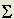

1966c
The following is a Letter to the Editor of the IEE journal 'Electronics and Power' published in the August, 1966 issue at p. 288.
THE GYROMAGNETIC RATIO
Dear Sir - The anomalous gyromagnetic ratio is observed when magnetism is reversed in a ferromagnetic specimen mounted to pivot about the direction of magnetisation. The angular-momentum reaction observed is half that expected on the assumption that electrons generate the magnetic field.
This anomaly has been explained by physicists in terms of electron spin - the concept of an electron spinning about a diameter. However, most electrical engineers who have heard of electron spin do not know that, to derive his gyromagnetic-ratio factor of 2, the physicist argues that the electron has two charges, one not rotating with the electron and the other rotating, and one uniformly distributed over the electron surface and the other having a specified non-uniform distribution.
As an electrical engineer, I have always been sceptical about this weird hypothetical concept of the electron, and, for the past 12 years, have subscribed to a personal belief that the explanation really lies in a field-reaction phenomenon due to conduction electrons in the ferromagnetic. Further, this opinion has convinced me that electrical science just cannot progress significantly unless we are prepared to revert to the old-fashioned idea of the aether.
A few days ago, I heard it said by a physicist that, in spite of its wide acceptance, physicists had never really been happy with the idea of electron spin. This has prompted me to put forward here my simple alternative account for the gyromagnetic phenomenon, and I hope that it will cause some of your readers to join me in my heretical belief in the need to recognise the aether medium.
Consider an electrical charge q of mass m, moving at velocity v in a magnetic field H. The lateral magnetic force on the charge is Hqv/c, where c is the ratio of electrostatic and electromagnetic units. This will balance a centrifugal force mv2/r, because the charge is constrained by the magnetic force to follow a circular orbit of radius r. The result is that a reaction magnetic field is set up by this charge. This reaction field is that due to a current-area quantity of:

(q/c)(v/2 r)r2 or qvr/2c
where the summation applies to all elements of reacting charge. Now, since Hqv/c equals mv2/r, it follows that
r)r2 or qvr/2c
where the summation applies to all elements of reacting charge. Now, since Hqv/c equals mv2/r, it follows that
qvr/2c = (mv2/2)/H
or 1/H times the kinetic energy of the reacting charges.
In a dynamical system, kinetic energy tends to a maximum, just as potential energy tends to a minimum. Thus, if Ho is the applied magnetic field, the reaction field Ho-H is proportional to the kinetic energy W divided by the field H. Then W is proportional to:
HoH - H2
and:
d(W)/d(H) = 0, when Ho = 2H
Thus, we see that the field applied to any system containing charges capable of motion will be halved.
The kinetic-energy density stored by the charges in motion will be proportional to H2, and will, in fact, be H2/8 if the reaction field is 8 times the current-area summation quantity per unit volume. Clearly, then, the kinetic energy of the reaction charges is the magnetic-field energy, and magnetic moment, normally believed to be 4 times the current-area summation, is really double this. The gyromagnetic ratio, therefore, is a factor of 2 for an electron-induced ferromagnetic
state, simply because current really generates twice the magnetic field predicted normally, but a reaction effect set up by charges also having mass properties invariably halves this field.
Since a magnetic field can be 'stored' in a vacuum it follows that this explanation requires recognition of Maxwell's displacement currents, even to sustain a steady field. We ought, therefore, to recognise the real existence of the charges giving rise to such currents and come to terms with the aether concept. These charges in the vacuous aether medium need not be electrons. They are, seemingly, of higher charge/mass ratio, because, in the ferromagnetic, the conduction electrons provide the reaction in preference to other free charges and presumably in accordance with the maximum-kinetic-energy condition.
Yours faithfully,
H. ASPDEN
IBM United Kingdom Laboratories Ltd.
Hursley Park, Winchester, Hants.
9th June 1966
Commentary It is an interesting exercise to ponder on what I have said in this item of IEE correspondence. In doing so one should ask oneself the question of whether our empirical man-made laws of physics should overrule the process of magnetic field energy density maximization as kinetic energy of reacting charge if the law says one thing and the energy criteria say another. Putting this into context the real question is whether the applied magnetic field is able to deflect every single one of the conduction electrons in motion in the metal or whether just enough can react to assure the optimization of the energy deployment. I believe the latter alternative is the dominant consideration. Energy deployment criteria dominate, regardless of how we view the empirical effects observed as between a magnetic field and electric currents in wires. A force is only exerted if the energy backing that force is there to do its work! This warrants very careful consideration. The laws of physics are subservient to the role which energy deployment has in the interactions between elements of matter and the interactions between matter and aether.